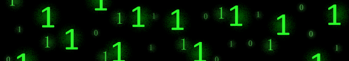

Что такое система счисления?
Двоичная система
Восьмеричная и шестнадцатеричная системы
Другие популярные системы
Перевод между системами
Арифметика в разных системах
История систем счисления
Практика и обучение